warp_frac and
dissolve_frac,
which controls the amount of warping and dissolving for each originla picture (In the midway face, I set both to
0.5). The complete sequence is here: 
For this part, I manually defined 45 points and added four edge points based on the shape of the image. One of the things I noticed for selecting keypoints is that since my lip's shape differs from George's a lot, I had to select more points for the lip to decrease the ghosting effect.
Picture of me:
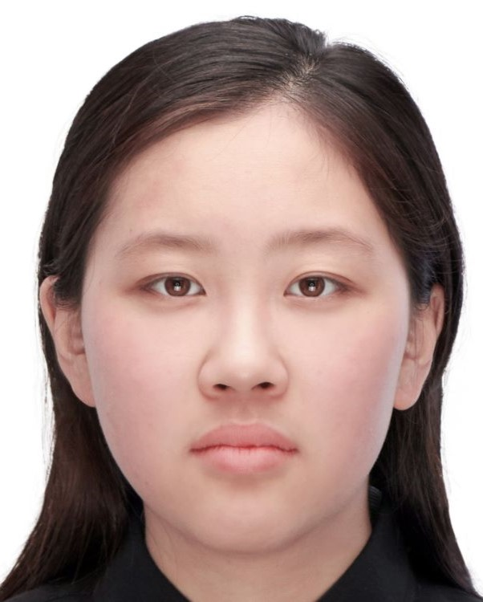
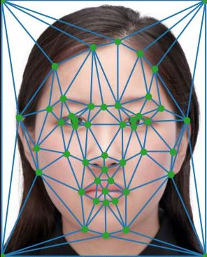
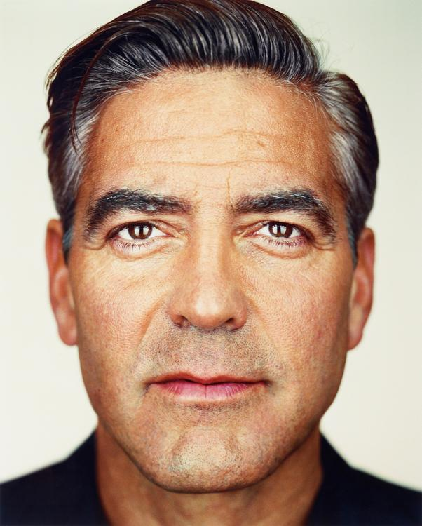
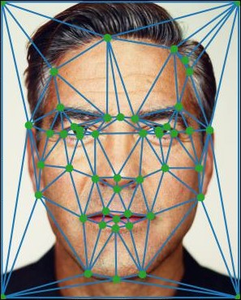
(Triangulation here is just for demo purpose -- I did not use triangulation on original faces)
Next I computed the midway points between my face and Georges, and computed a trigulation with Delaunay
triangles:
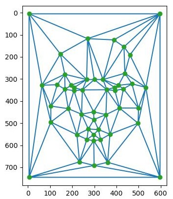
Next, I tried to compute the affine matrix A for each triangle from the original images (me/George)
to
the midway face triangle. Then I took the inverse of A and got the inverse transformation from the
midway face triangle to the original face triangle. This inverse matrix will tell us where each pixel in the
midway
face comes from, so that we can obtain the color information of this pixel from its origin in the original
images.
Ideally, it's a bijection, but usually the result of inverse transformation is in decimal, which means that
the
origin of the midway triangle pixel is in between two pixels in the original images. To get the exact value of
the
midway pixel, I interpolate the nearby pixels in the original image to get a value for the color of the midway
pixel.
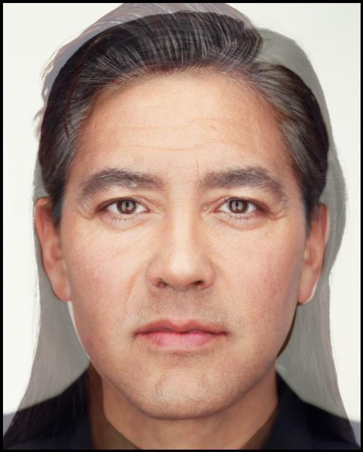
In this part, I produced a sequence of images with different warp_frac and
dissolve_frac,
which controls the amount of warping and dissolving for each originla picture (In the midway face, I set both to
0.5). The complete sequence is here:
In this part, I used the Danes dataset of faces with neutral expressions. The resulting average face shape looks
like
this:
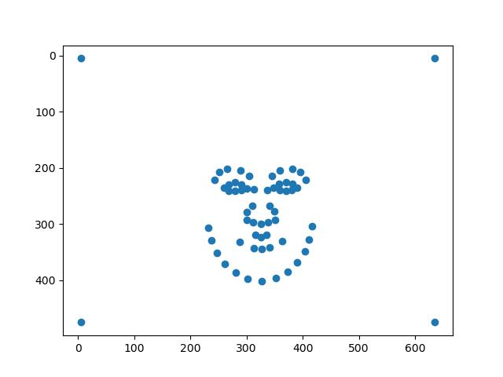
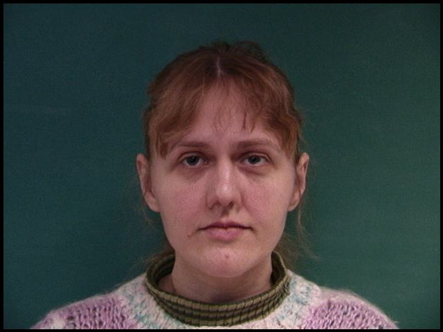
The final resulting average face:
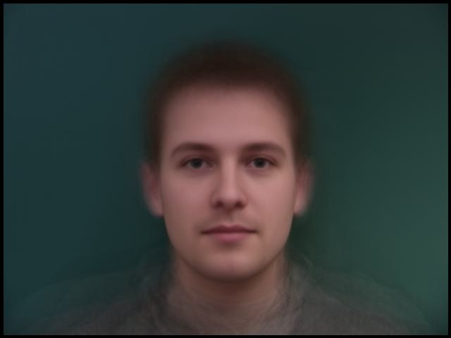
To my face warped into the average face's geometry, I cropped and resize the average face and my face to be of the same dimension:
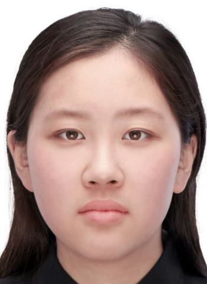
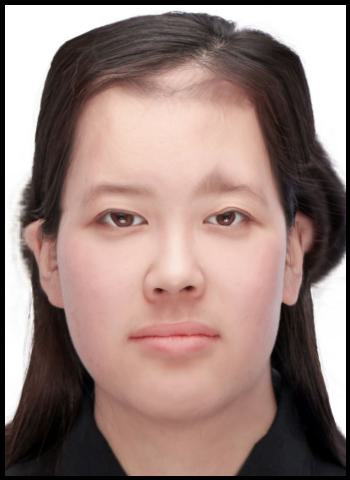
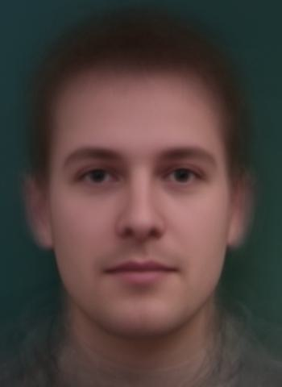
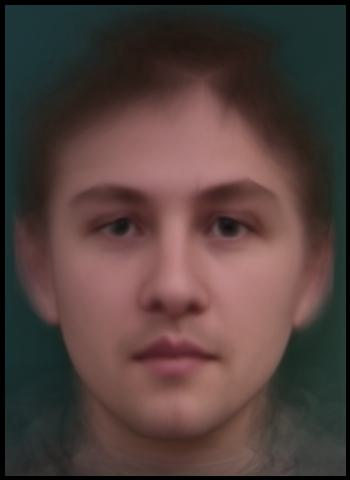
I subtract the mean face points from my face's points to get the delta, and then multiplied delta by different coefficients to obtain caricatures of me on different levels.
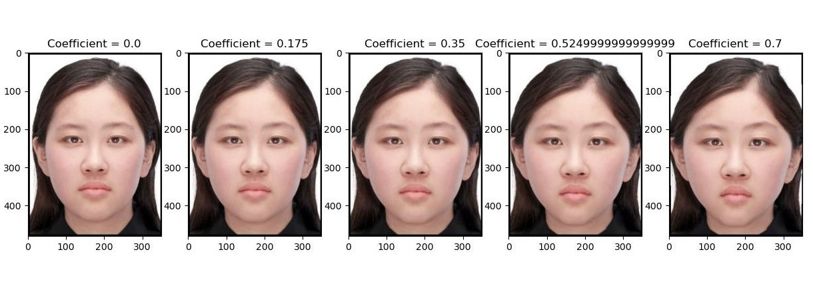
I look very unhappy on this pictures, so I tried to make myself smile. First, I selected all the pictures which the person smiled
without showing their teeth (because I did not show my teeth). Then, I computed the mean face
of
all the smiling faces:
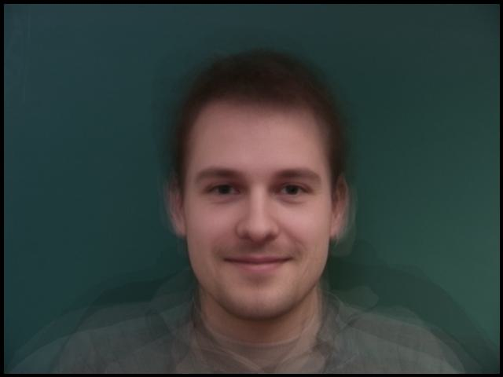
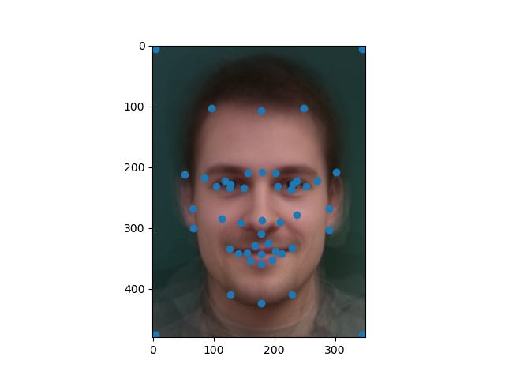
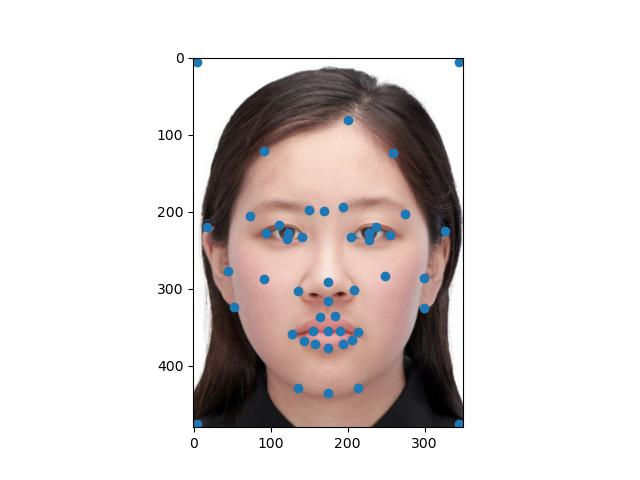
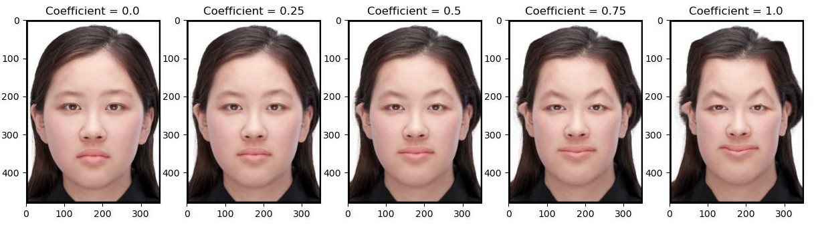